Настройка интеграции Asterisk + FreePBX c amoCRM при помощи сервиса Callbee
Info
Для подключения интеграции необходимо поочередно выполнить пункты данного руководства в той последовательности, как они описаны.
Необходимые требования
Asterisk + FreePBX далее АТС
- Asterisk версия 13.*.* или выше
- FreePBX версия 13.*.* или выше
- Статический IP адрес (необходимо приобрести у вашего интернет-провайдера) для прямого доступа к АТС из сети Интернет
Интеграция осуществляется при помощи подключения облачного сервиса Callbee к АТС при помощи Asterisk Managment Interface (AMI) посредством TCP протокола. AMI принимает подключения, устанавливаемые на сетевой порт (по умолчанию - TCP порт 5038)
Сетевые настройки
Для того чтобы сервис Callbee мог подключится к вашей АТС, у вас обязательно должен быть "белый" статический IP адрес либо доменное имя с A записью на ваш IP адрес, и проброшены через NAT к АТС следующие два порта:
- внешний порт (например 35038) на порт 5038 TCP - для доступа к АТС по AMI (Замечание по безопасности! Рекомендуем открывать порт разрешив подключение с IP адресов указанных в списке)
- внешний порт (например 38080) на порт 80 TCP (стандартный порт веб - сервера АТС) - для выгрузки записей разговоров
Интерфейс настройки проброса портов отличается в зависимости от используемого в вашей сети маршрутизатора. Актуальную инструкцию по пробросу портов под ваш маршрутизатор вы можете найти в интернете.
Настройка Asterisk + FreePBX
Info
- Внутренние номера (Extensions) могут быть трехзначными или четырехзначными (222 или 2222).
- На всех входящих маршрутах(Inbound Routes) ожидаемый входящий номер DID должен быть не менее 5 цифр, это может быть номер линии в международном формате (например: +375291111111).
- На всех входящих (Inbound Routes) и исходящих маршрутах (Outbound Routes) обязательно должны быть включены записи разговоров.
- Сервис Callbee не изменят входящий номер телефона. Входящий номер телефона будет проброшен в amoCRM том виде в каком он поступил на АТС.(Рекомендуется средствами АТС приводить все входящие номера телефонов к единому международному формату).
- При звонке по клику из amoCRM на АТС поступает номер телефона записанный из карточки сущности amoCRM. Необходимо чтобы АТС умела набирать этот номер (в этом формате) в линию.
- Для корректной работы интеграции мы рекомендуем настройки на АТС, которые не указаны в данной инструкции, оставить по умолчанию.
- Интеграция не гарантирует корректную работу функций при использовании модуля FreePBX Ring Groups для настройки распределения входящих вызовов в АТС. Для корректной работы всех функций интеграции рекомендуем вместо Ring Groups использовать Queues
Настройка AMI Asterisk
Для подключения к AMI Asterisk нужно создать AMI пользователя на стороне Asterisk. Это можно сделать двумя способами:
-
Способ 1 через CLI:
В файле /etc/asterisk/manager_custom.conf добавить, например:
[callbee] secret=password deny=0.0.0.0/0.0.0.0 permit=127.0.0.1/255.255.255.0 permit=89.108.65.246/255.255.255.255 permit=31.24.92.54/255.255.255.255 read=system,call,log,verbose,command,agent,user,config,command,dtmf,reporting,cdr,dialplan,originate,message write=system,call,log,verbose,command,agent,user,config,command,dtmf,reporting,cdr,dialplan,originate,message writetimeout = 500После чего выполнить команду
Конец действияasterisk -rx "manager reload" -
Способ 2 через интерфейс FreePBX:
- Должен быть установлен модуль Asterisk API
- В пункте меню Settings -> Asterisk Manager Users(1) -> Add Manager(2)
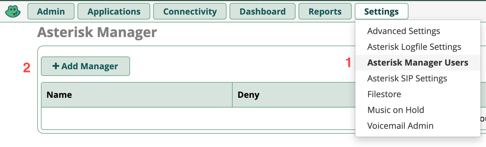
- Во вкладке General заполнить поля как на примере
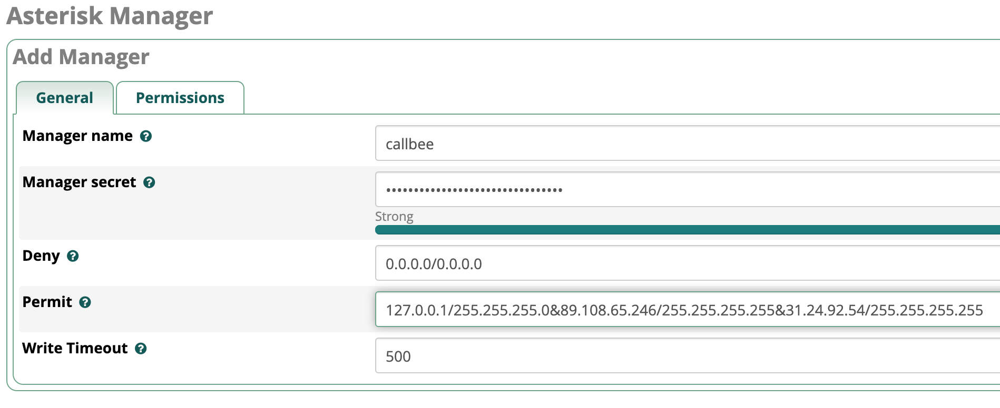
- Во вкладке Permissions установить все переключатели в положение Yes
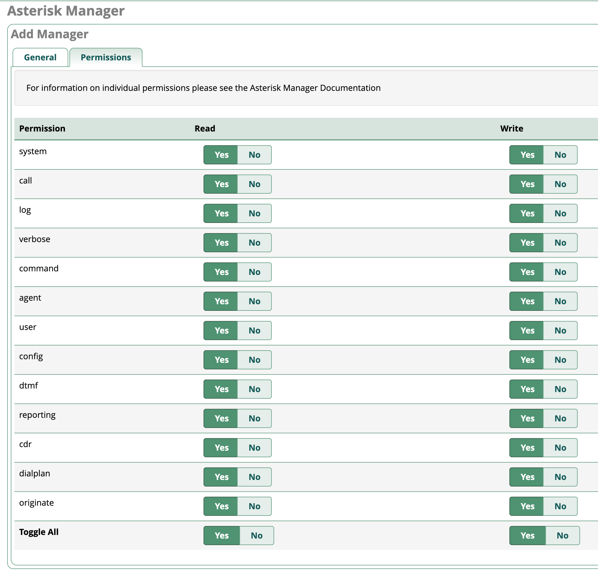
Настройка транков (Trunks) в FreePBX
Важное замечание
- На данный момент интреграция работает только с chan_SIP транками
- Поле Outbound CallerID
Пример стандартной настройки
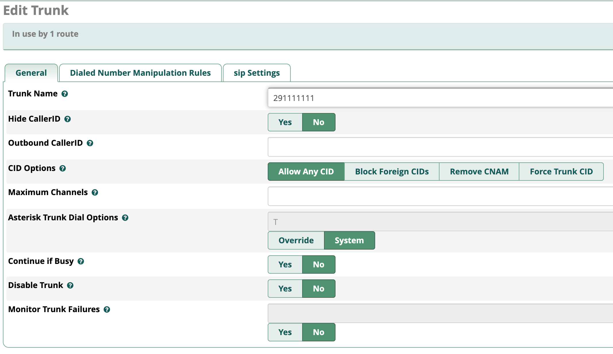
Настройка Входящей маршрутизации (Inbound Routes) в FreePBX
Пример стандартной настройки
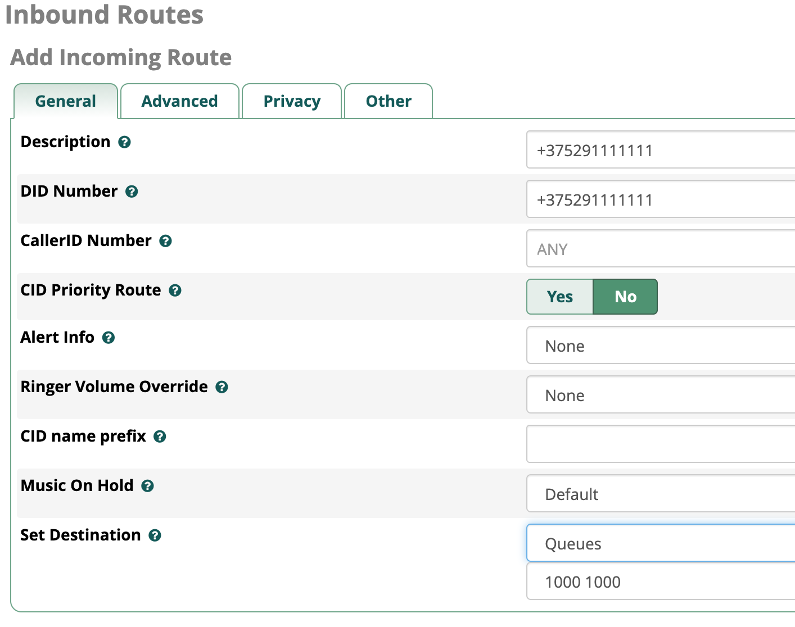
Для работы умной маршрутизации необходимо успеть получить ответ от CRM на запрос наличия существующего контакта с определившимся номером телефона. Для этого необходимо выставить задержку на маршрутах Advanced -> Pause Before Answer (например 1 сек),
С ростом базы контактов в amoCRM возможно задержку необходимо увеличить на 1-2 секунды.
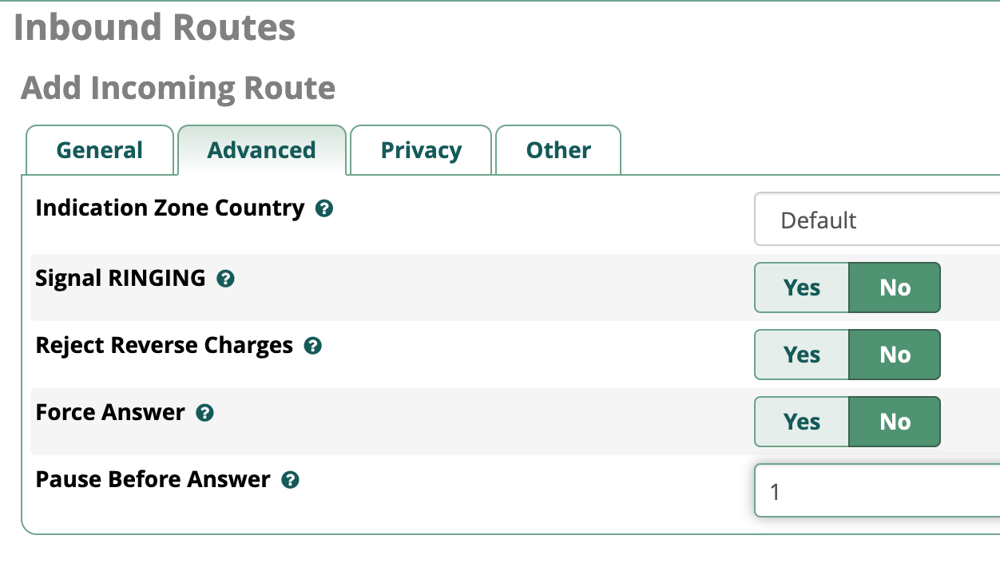
Для получения записей разговоров в CRM включаем записи разговоров на маршрутах Other -> Call Recording -> Yes
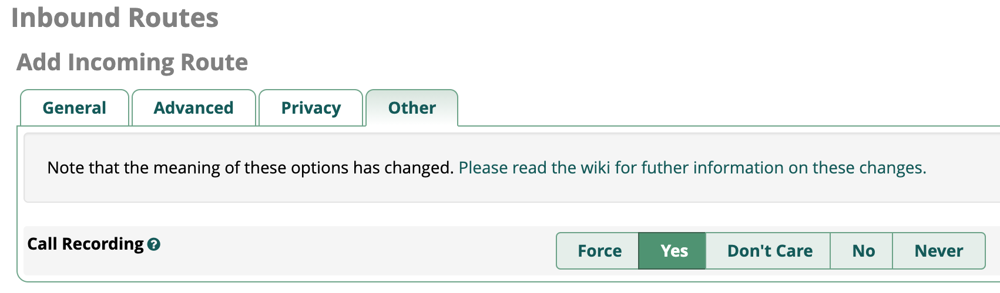
Настройка Исходящей маршрутизации (Outbound Routes) в FreePBX
Важное замечание
Поле Route CID должно быть пустым
Пример стандартной настройки

Для записи разговоров при исходящих вызовах на вкладке Additional Settings включаем записи разговоров
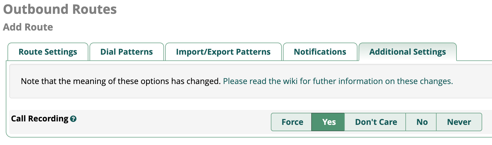
Настройка Внутренних номеров (Extensions) в FreePBX
Пример настройки внутреннего номера 222:
- Есть поддержка драйвера PJSIP и CHAN_SIP для внутренних номеров
- Outbound CID оставить по умолчанию
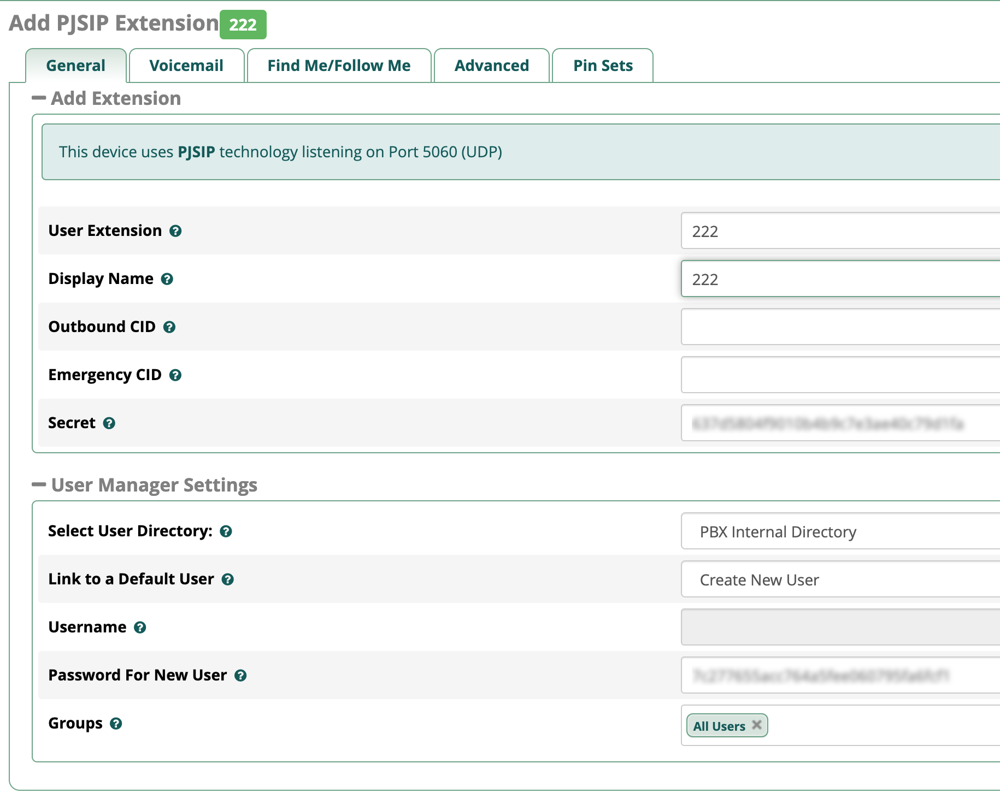
- настройку записей разговоров оставить по умолчанию (записи записываются на маршрутах)
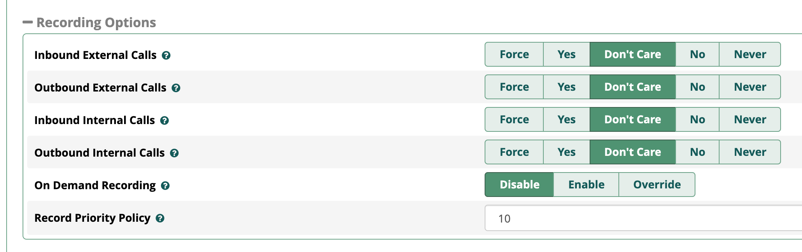
Подключение интеграции на стороне сервиса Callbee
Info
После проведения всех настроек описанных выше необходимо произвести подключение сервиса к Asterisk через AMI пользователя, которого мы создали ранее (см. Выше)
В личном кабинете сервиса Callbee для интеграции с amoCRM необходимо:
- Во вкладке Integration нажить на кнопку Install integration и выбрать вкладку AMOCRM WITH ASTERISK либо нажать кнопку Install на блоке с типом интеграции AMOCRM WITH ASTERISK
- Заполнить все необходимые пункты для интеграции
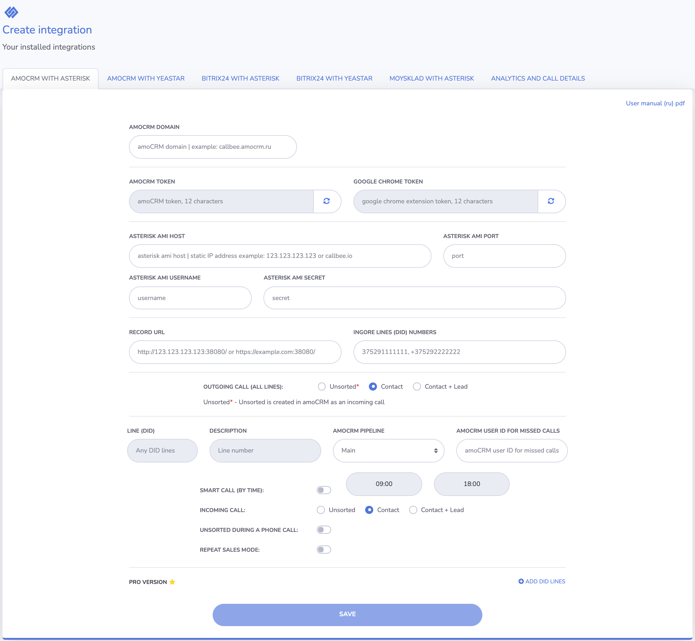
- В поле amoCRM Domain обязательно необходимо внести ваш домен amoCRM (например, callbee.amocrm.ru без https://)
- amoCRM TOKEN - Токен для соединения с AmoCRM, этот токен необходимо будет вставить в соответствующее поле в виджете на стороне AmoCRM (токен должен быть из 12 символов, правее есть кнопка генерации токена – нажмите ее для создания токена). Настройка интеграции на стороне AmoCRM описана далее
- Google Chrome TOKEN - Токен для соединения с расширением в браузере Google Chrome, этот токен необходимо будет вставить в параметрах расширения (токен должен быть из 12 символов, правее есть кнопка генерации токена – нажмите ее для создания токена). Настройка расширения описана [далее]#google-chrome
- Asterisk AMI Host/Port/Username/Secret - Настройка подключения по AMI к ATC (IP-адрес сервера или доменное имя, порт, имя пользователя, пароль)
- Record URL - Ссылка для записей разговоров. По данной ссылке amoCRM будет пытаться получить доступ к записи разговора, в момент попытки прослушивания записи из amoCRM. Ссылка должна быть всегда доступна.
- Ignore lines(DID) numbers - DID номер(а) через запятую на входящим маршруте. Эта функция позволяет не реагировать на номера, не относящиеся к работе в CRM. например прямые номера бухгалтерии или администрации. Интеграция будет игнорировать эти входящие маршруты.
- Outgoing calls (all lines) - Данная настройка позволяет выбрать какую сущность создавать при исходящем вызове НОВОМУ клиенту. Неразобранное, Контакт, Контакт + Сделка
Info
Далее указываются настройки для линии (DID). В стандартной версии настройки применяются ко всем линиям по умолчанию. В Pro версии есть возможность устанавливать настройки для каждой линии индивидуально.
- Line (DID) - Номер подразделения отдела; номер для входящих звонков, который относится к подразделению/отделу (номер берется из настроек FreePBX поля DID Number и доступно для редактирования только в Pro версии)
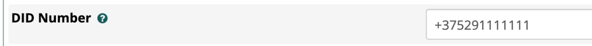
- Description - Описание линии (DID) будет заполнять поле Линия в карточке Контакта и Сделки в amoCRM, если оставить поле Description пустым, будет проброшен номер линии (DID) (доступно для редактирования только в Pro версии)
- amoCRM pepline - Воронка в amoCRM. На момент создания интеграции по умолчанию выбирается основная воронка (Main), т.к. еще нет связи интеграции и amoCRM. Далее при корректном подключении интеграции при редактировании можно будет указать необходимую воронку из имеющихся #pepline
- amoCRM user ID for missed calls - ID пользователя в amoCRM для пропущенных вызовов (ответственный пользователь за пропущенные вызовы для новых клиентов, которых нет в amoCRM). Можно устанавливать для каждой линии свое значение.
- Smart call (by time) - Включение умной маршрутизации (перевод звонка на ответственного сотрудника) с указанием времени работы. Вне графика работы умной маршрутизации звонок будет идти по маршруту по умолчанию. Чаще всего применяется для того, чтобы проиграть клиенту сообщение о том, что он дозвонился в нерабочее время.
- Incoming call - Настройка позволяет выбрать какую сущность создавать при входящем звонке от НОВОГО клиента Неразобранное, Контакт, Контакт + Сделка
- Unsorted during a phone call - Создание неразобранного в amoCRM в момент ответа на входящий звонок. Данная настройка сделана для удобства работы с Неразобранным при входящих звонках. Данная настройка позволяет создать неразобранное в начале звонка без записи разговора, для возможности начала работы с данной сделкой (принятие, заполнение полей). При завершении разговора в эту карточку Неразобранного или Сделки пробросится разговор.
- Repeat sales mode - Настройка автоматической регистрации повторных сделок. Данная настройка позволяет создавать повторные сделки с существующими клиентами, если в момент входящего звонка от существующего клиента с ним нет ни одной активной сделки. При повторном обращении клиента в Сделке__в поле __Повторное обращение будет указано значение Повторное. Если данная настройка отключена, поле Повторное обращение можно скрыть. Поле заполняется для аналитики и для возможности отображение в карточке в воронке для визуального различия в новыми сделками.
- Нажать кнопку Save и дождаться завершения подключения
Подключение интеграции на стороне amoCRM
Внимание
- Просим обратить особое внимание - название, логотипы могут отличаться от скриншотов данного руководства
- Интеграция будет работать только для внутренних номеров сотрудников, которые вы указали в настойках виджета

- В настройках amoCRM, выбрать пункт Интеграции, сверху в строке поиска ищем по названию Callbee, либо в разделе Телефония найти интеграцию Callbee (Asterisk и Yeastar), согласившись с условиями нажать на кнопку Установить
- Далее необходимо прописать внутренние номера сотрудников.

- В поле Token Уникальный токен, необходимо скопировать из поля AMOCRM TOKEN из настроек вашей интеграции в личном кабинете на сайте Callbee
- Сохранить настройки.
- В личном кабинете сервиса Callbee после всех настроек на стороне amoCRM необходимо перезагрузить интеграцию.
- После перезагрузки вы можете выбрать в какие воронки будут создаваться сущности при входящем вызове #pepline
Подключение и настройка расширения в браузере Google Chrome #google-chrome
Расширение Callbee в google chrome используется для работы всех уведомлений о работе интеграции. Например, для оповещения о поступающих вызовах.
Установка:
- В магазине google chrome находим расширение Callbee и устанавливаем его.
- Либо перейти по ссылке и установить.
Настройка:

- New version - Отметить пункт (обязательно).
- Click on the card to open a new tab in the browser - Переход в карточку контакта по клику всплывающей карточки в новой вкладке браузера, по необходимости.
- Extension number - Внутренний номер телефона сотрудника, на рабочем месте которого мы настраиваем данное расширение.
- Server or token - Уникальный токен, необходимо скопировать из пункта GOOGLE CHROME EXTENSION TOKEN из настроек вашей интеграции в личном кабинете Callbee (#google-chrome)
- Сохраняем настройки.
Статус расширения:
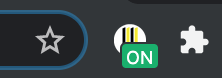
ON - отображаются оповещения, работает умная маршрутизация для конкретного сотрудника

OFF - отключены все оповещения, не работает умная маршрутизация для конкретного сотрудника
На данном этапе настройка считается выполненной.
При возникновении вопросов обращайтесь за помощью в службу поддержки Callbee. Контакты указаны в Личном кабинете сервиса Callbee.io